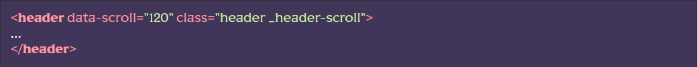

Підключення функціоналу
[JS] У файлі <>js/app.js розкоментувати рядок flsScroll.headerScroll();
Використання функціоналу
[HTML] До тегу header, додаємо HTML-атрибут data-scroll, у значенні атрибуту вказуємо через яку кількість прокручених вниз пікселів нам необхідно додати клас до header (зазвичай за висотою шапки, за замовчуванням 1px).
Тепер як тільки користувач прокрутить вниз зазначені вище 120px до header додасться технічний клас _header-scroll. Цей клас буде присутній до тих пір, поки користувач не повернеться вгору (не доходячи до 120px).
Результат роботи:
[HTML] Далі до тегу header додаємо ще один HTML-атрибут data-scroll-show. Як тільки користувач зупинить прокручування до тега header, через певний час додасться ще один технічний клас _header-show. Цей клас зникає тільки в момент прокручування вниз. При прокручуванні вгору клас не зникає.
Результат роботи:
Можна змінити час затримки додавання класу _header-show. Для цього слід вказати значення атрибуту data-scroll-show у мілісекундах (за замовчуванням 500)
[SCSS] Тепер залишилося редагувати властивості цих підключених класів у scss. Наприклад:
Розташування та додаткові дані
Функціонал знаходиться в js/files/scroll/scroll.js. Назва функціі headerScroll()